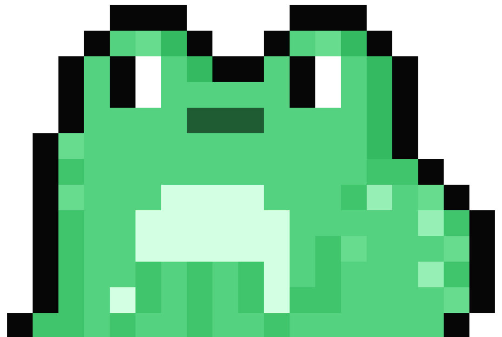

Conflict arises from attempts to control the flow of mana by use of technology or magic between different civilizations.
An order of knights work to maintain balance of mana in the world to avert disaster, and protect the Mana Tree.
Hints that a cataclysm may be on the horizon, or has already happened in the past also play a large part in both games.
Disobeying their Elder's instructions, three boys from the small Potos village trespass into a local waterfall where a treasure is said to be kept.
One of the boys, the game's protagonist (named Randi in the original Japanese version), stumbles and falls into the lake, where he finds a rusty sword embedded in a stone.
Guided by a disembodied voice, he pulls the sword free, inadvertently unleashing monsters in the surrounding countryside of the village.
The villagers interpret the sword's removal as a bad omen and banish the boy from Potos forever.
An elderly knight named Jema recognizes the blade as the legendary Mana Sword, and encourages the hero to re-energize it by visiting the eight Mana Temples.
During his journey, the hero is joined by an amnesiac sprite child and the daughter of a nobleman from Pandora.
The orphaned sprite (named Popoi in the original Japanese version) initially tries to con the hero out of his money, but later accompanies him in hope of recovering his lost memory.
The girl (named Purimu in the original Japanese version) joins the party in search of her lost love, Dyluck, an officer in Pandora's army who has gone missing.

;